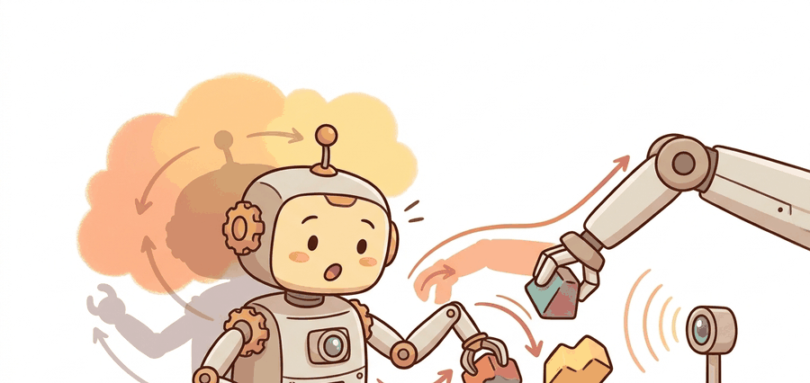

"The best joystick for an arm is sometimes another arm that admits it is only pretending."
A Kinematic Twin

This section assumes familiarity with forward and inverse kinematics as introduced in section 5.6, and with imitation learning objectives covered in section 21.2. The kinematic-mapping principles here are applied directly to bimanual data collection in section 22.3 (Mobile ALOHA) and the episode-quality filtering techniques introduced in section 23.5 build on the latency and calibration concepts developed below.
A researcher picks up a lightweight arm, moves it through a folding task, and a robot arm on the other side of the table mirrors every joint angle in real time. That recorded trajectory becomes training data. This is the central bottleneck for imitation learning right now: the quality of the policy you will train is bounded by the quality of the demonstrations you collect, and the quality of those demonstrations is bounded by how faithfully the teleoperation interface translates human intent into robot motion. ALOHA and GELLO cracked this problem by making the leader kinematically identical to the follower, eliminating the mental geometry that degrades operator skill. Here you will learn how that kinematic mapping works, where it breaks, and how to tune it for your own hardware.
A teleoperation interface that forces the operator to solve geometry in their head is not a data collection tool; it is a cognitive tax on every demonstration in the dataset.
Kinematic Mapping
The cleanest leader-follower interface makes the leader configuration $q_L$ correspond to a follower configuration $q_F$. The simplest mapping is an affine calibration in joint space:
$$q_F = S(q_L - q_L^0) + q_F^0,$$
where $q_L^0$ and $q_F^0$ are neutral poses and $S$ contains joint sign and scale terms. More complex systems map end-effector poses through forward and inverse kinematics, but the principle is the same: the operator should not mentally solve geometry that the device can embody. The diagram below traces this calibration from operator motion through the leader arm, the affine mapping, and into the follower arm.
ALOHA and GELLO apply this same affine mapping but differ in what the leader hardware is. ALOHA builds its leader from the same Low-Cost Robot Arm (LCRA) as the follower, so the calibration in Equation above is close to the identity map with a small sign and offset correction. GELLO takes the opposite starting point: it is an open-source, 3D-printed leader arm driven by Dynamixel servos (a common hobby-robotics actuator with built-in position and current sensing) that is explicitly designed to be a kinematic twin of a target commercial follower arm, such as a UR5 or a Franka Panda, that was not built with teleoperation in mind. Because a GELLO leader is manufactured to mirror the follower's link lengths and joint axes, the same $S(q_L - q_L^0) + q_F^0$ mapping applies with $S$ close to a signed identity, and a lab can build a matched leader for almost any commercial arm without redesigning the follower.
Step-Through: Affine joint mapping for one wrist joint
Trace the calibration $q_F = S(q_L - q_L^0) + q_F^0$ for a single wrist joint with concrete numbers. Suppose the leader neutral pose is $q_L^0 = 0.10$ rad and the follower neutral pose is $q_F^0 = -0.05$ rad. The leader physically rotates over $[-3.14, 3.14]$ rad but the follower URDF (Unified Robot Description Format, the XML file that specifies a robot's links, joints, and joint limits) caps at $[-2.09, 2.09]$ rad, so we set the scale to $S = 2.09 / 3.14 = 0.666$, and the joint sign is reversed, giving an effective diagonal entry of $-0.666$. Now the operator pushes the leader to $q_L = 1.60$ rad. Step 1: subtract the neutral offset, $q_L - q_L^0 = 1.60 - 0.10 = 1.50$ rad. Step 2: apply scale and sign, $-0.666 \times 1.50 = -0.999$ rad. Step 3: add the follower neutral, $-0.999 + (-0.05) = -1.049$ rad. The follower commands $-1.05$ rad, which sits safely inside $[-2.09, 2.09]$. Had we left $S = 1$ and skipped the sign flip, the command would have been $1.50 - 0.05 = 1.45$ rad in the wrong direction, and a leader push toward $3.0$ rad would have demanded $2.95$ rad from a follower that physically stops at $2.09$ rad, silently clipping every demonstration that nears the boundary.
The affine joint-space mapping works well when leader and follower share the same kinematic structure. In ALOHA, both arms are Low-Cost Robot Arms (LCRA) with matched joint counts and similar link lengths, so the mapping is direct. The proficiency payoff is concrete. Operators using a kinematically matched leader typically reach proficiency in under 30 minutes. For the same task, operators using a joystick or a SpaceMouse (a six-axis input puck that translates hand push and twist into end-effector velocity commands) often need 5 to 10 hours of practice to match that success rate on dexterous bimanual tasks. That skill gap compounds into a data gap. A mismatched interface produces noisier demonstrations, so you need roughly 10 to 20 times as many episodes to train a policy of equivalent quality. The original ALOHA paper reached 90% task success with around 50 demonstrations per task. SpaceMouse-collected datasets on comparable contact-rich tasks typically required 500 to 1000 episodes to reach the same threshold. The mapping breaks down when the two arms differ in workspace extent or joint range. A leader wrist that rotates 270 degrees driving a follower limited to 180 degrees will hit a hard stop the operator cannot feel. That mismatch typically injects a clip artifact into demonstrations that approach the boundary, though the frequency depends on how often the task actually drives the joint near its limit. In those cases, a task-space mapping through forward and inverse kinematics is safer: building on the inverse-kinematics machinery from section 5.6, where a singularity is a configuration in which the arm loses a degree of freedom and the inverse-kinematics solution becomes ill-conditioned or non-unique, the system can detect the singularity and alert the operator before the follower executes it.
Checkpoint
So far: a kinematically matched leader (ALOHA's shared LCRA design or a GELLO leader built to mirror the follower) turns teleoperation into a near-identity mapping that operators learn in minutes, while a mismatched interface (a joystick or SpaceMouse) forces the operator to solve geometry mentally, produces noisier demonstrations, and can silently clip commands at joint limits or singularities the operator cannot feel.
When configuring the scale matrix $S$ for a GELLO or ALOHA-style system, check the joint_limits field in your URDF against the leader's physical range before the first collection session. A joint whose leader range is, say, $[-3.14, 3.14]$ rad while the follower URDF caps at $[-2.09, 2.09]$ rad should have its corresponding diagonal entry in $S$ reduced to $2.09 / 3.14 \approx 0.67$ so the full leader arc maps to the safe follower arc rather than clipping at the boundary. The GELLO calibration script exposes this as the --scale argument per joint; ALOHA users set it in config/robot_config.yaml under joint_scales. Skipping this step is the most common source of the silent clip artifact described above, and it will not appear in motor error logs because the controller receives a feasible command.
The affine calibration is essentially teaching two robots the same secret handshake: offset, scale, sign, repeat. The follower never asks questions; it just mirrors faithfully, which is arguably a better arrangement than most human partnerships.
A common assumption is that leader-follower teleoperation captures the operator's intent directly, making the recorded demonstrations inherently high-quality expert data. This is wrong: what the dataset records is not the human's intent but the follower's executed joint positions, which are filtered through kinematic calibration, network latency, joint-range clipping, and control-rate quantization before they reach the log. Each stage can silently corrupt the correspondence between what the operator meant and what the robot did. The correct mental model is that a recorded demonstration is evidence about system behavior under operator guidance, and its fidelity as expert supervision depends entirely on how well the full hardware-software pipeline preserved the original intent at every step.
Imitation learning treats recorded actions as targets. A bad teleoperation interface injects extra noise into those targets, so policy training pays for interface design mistakes later.
Use the ALOHA and GELLO reference repositories as starting points for hardware wiring, ROS 2 integration, and calibration scripts rather than rebuilding a leader-follower stack from scratch. The right-tool move is to spend custom effort on task fixtures, safety checks, and logging fields.
Latency And Stability
Kinematic matching removes the geometry the operator must solve in their head, but even a perfectly calibrated leader still corrupts labels if the signal arrives late, so the next axis of fidelity is timing rather than geometry.
Latency changes what the operator sees and what the robot executes, creating what is called the observe-execute time gap, which corrupts action labels. Let $\Delta t = t_{execute} - t_{observe}$. At 50 Hz, a control step is 20 ms; at 5 Hz, it is 200 ms. For contact-rich manipulation, that difference can decide whether the operator corrects a slip or records an avoidable failure.
Think of the observe-execute gap like driving a car whose side mirrors show an image from three seconds ago. You steer based on where the road was, not where it is now. When you finally notice a curve and turn the wheel, the car has already drifted past the correct line. The correction you make looks, to any observer recording your steering inputs, like a bizarre overcorrection with no visible cause. In the same way, an operator reacting to stale video steers the robot based on a past state, and the resulting correction gets recorded as if it were a deliberate expert move.
The following snippet computes a latency budget and flags episodes that should not be used as clean expert data.
# Audit leader-follower timing so bad labels are not treated as expert actions.
# Episodes over the latency threshold should be labeled or excluded from clean splits.
episodes = [
{"id": "ep001", "control_hz": 50, "network_ms": 18, "camera_ms": 12},
{"id": "ep002", "control_hz": 10, "network_ms": 55, "camera_ms": 40},
]
for episode in episodes:
control_ms = 1000 / episode["control_hz"]
total_ms = control_ms + episode["network_ms"] + episode["camera_ms"]
label = "clean" if total_ms <= 80 else "latency-risk"
print(episode["id"], round(total_ms, 1), "ms", label)The output distinguishes an episode that can serve as clean supervision from one that needs a latency-risk label. That distinction matters because a delayed correction can look like a bad action in the dataset even when the operator made the right decision based on stale feedback. A serious collection pipeline keeps both rows, but routes them to different training or stress-evaluation uses.
Deadman Switches And Safety Interlocks
Timing budgets protect label quality. A second class of interlock protects the operator and hardware from the moments when control breaks down entirely. A deadman switch is a hardware or software interlock that halts follower motion the moment the operator releases a held button or grip. Without one, any hand slip, distraction, or cable snag lets the robot keep executing instead of freezing in its last commanded pose. That matters because a manipulator arm can exert enough force at speed to damage itself, the workspace, or a nearby person. In embodied AI data collection, the stakes extend beyond hardware safety. An unintended motion produces an action label that looks like expert behavior but is actually noise, and the pipeline then bakes that noise silently into the training set.
The mechanical version wires the switch in series with the control-enable signal: releasing it opens the circuit, and the follower gets a zero-velocity command on the next cycle. The software version runs a watchdog timer (a countdown that resets on every expected signal and triggers a fail-safe action if it is not reset in time) that expects a fresh "active" heartbeat every control period, and clamps commanded velocities to zero when the heartbeat is late. Both stop the robot within one control cycle instead of letting an unsafe partial motion finish.
The table below summarizes the four design axes that most often separate a leader-follower rig that produces clean expert data from one that quietly corrupts it, pairing each axis with the observable signal that tells you which side you are on.
| Design Axis | Good Sign | Failure Sign |
|---|---|---|
| Kinematic match | Operator motion resembles follower motion. | Operator must mentally remap axes or gripper orientation. |
| Calibration | Neutral poses, joint signs, and gripper ranges are checked daily. | Small offsets accumulate into contact errors. |
| Safety interlocks | Deadman switch, speed limits, workspace limits, and emergency stop are tested. | Operator can command unsafe motion during setup. |
| Synchronization | Video, robot state, and action commands share a clock or sync event. | Replay shows actions that do not match visual state. |
Calibration drift corrupts labels silently. If the neutral-pose offsets $q_L^0$ or $q_F^0$ shift between sessions (due to cable slack, joint friction changes, or a software restart resetting encoder counts), the follower executes systematically offset positions while the dataset records no flag. A policy trained on drifted data will typically pick up the drifted geometry rather than the actual task geometry, since behavior cloning has no signal to distinguish a systematic offset from an intended target. Running the daily calibration gate and storing the calibration vector alongside each episode is the only reliable defense: a later audit can then detect sessions where the calibration vector diverged beyond a tolerance and exclude or re-weight them.
- Move leader and follower to neutral poses.
- Verify joint sign and scale against three known postures.
- Command a slow workspace sweep with speed limits enabled.
- Record a calibration episode and inspect replay alignment.
- Only then collect task demonstrations.
If the leader device fatigues the operator, later episodes may contain slower reactions and more conservative paths. Record operator, session order, and break timing so the dataset can distinguish task difficulty from human fatigue.
In an ALOHA-style bimanual task, the data card should record whether the demonstration came from static tabletop ALOHA or Mobile ALOHA. Mobility changes camera motion, whole-body coordination, collision risks, and the split that should test generalization.
Bilateral force-feedback leaders for contact-rich data. Standard ALOHA and GELLO designs are unilateral: the leader records joint positions but the operator receives no haptic force signal from the follower. Recent work on bilateral teleoperation (e.g., HATO from the Berkeley Robot Learning Lab, 2024) closes the loop by reflecting follower contact forces back to the leader hand, producing demonstrations that contain richer contact-phase signals and reducing the frequency of operator-induced slip artifacts at grasp onset.
Whole-body and humanoid leader-follower scaling. As humanoid platforms (Unitree H1, Fourier GR1, Figure 01) enter research labs, leader-follower design must extend beyond arm kinematics to whole-body pose retargeting. The OKAMI system (He et al., 2024) and related work from the CMU Robotics Institute demonstrate kinematic retargeting from a human motion-capture suit to a humanoid follower, mapping torso, waist, and leg joints that have no direct counterpart on a tabletop arm leader.
Latency-resilient policies trained directly on teleoperation artifacts. Rather than filtering out latency-corrupted episodes, several 2024-2025 efforts (including work from the Columbia Robot Learning Lab building on ACT-Plus-Plus (Action Chunking with Transformers, extended)) train policies that explicitly model the observe-execute time gap as a learned offset, allowing the policy to compensate for a known latency budget at inference time rather than discarding episodes that exceed a threshold.
Open problem for a PhD student. No rigorous metric currently exists for interface-quality-adjusted demonstration value: given two episodes of the same task, one collected at 50 Hz with a kinematically matched leader and one at 10 Hz with a SpaceMouse and 60 ms network latency, how much should each episode be upweighted or downweighted in a co-training mixture to equalize their contribution to policy gradient quality? Defining, measuring, and validating such a metric across at least two robot embodiments and two task families is a self-contained dissertation chapter.
Real-World Application: Mobile ALOHA household manipulation
Stanford's Mobile ALOHA system used exactly this kinematically matched leader-follower design to collect bimanual demonstrations for tasks like cooking shrimp, wiping spills, and using an elevator. Because each leader arm shared the follower's joint structure, two operators could puppeteer all four arms with under 50 demonstrations per task, and co-training (training one policy on a mixture of the new task's demonstrations and a larger pool of related demonstrations, rather than the new task's data alone) those demonstrations with static ALOHA data pushed success rates above 80 percent on previously unseen mobile-manipulation tasks.
Lab: Measure how scale-matrix error injects joint-limit clipping
Goal: empirically observe how a mis-set scale matrix $S$ silently clips demonstrations at the follower's joint limits, the exact artifact described in this section. Tools: Python with mujoco and numpy (or the LeRobot simulation environment); a simple single-arm MuJoCo model such as the bundled franka_emika_panda or any 6-DOF arm with defined joint limits. Steps: (1) Generate a synthetic "leader" trajectory of one wrist joint sweeping its full physical range, for example a sine wave over $[-3.14, 3.14]$ rad. (2) Map it to the follower with the affine rule $q_F = S(q_L - q_L^0) + q_F^0$, first using the correct $S = 2.09/3.14$ and then deliberately using $S = 1.0$. (3) For each case, clamp the commanded joint to the follower's URDF limit $[-2.09, 2.09]$ rad and step the simulation. What to vary: the diagonal entry of $S$ from $0.5$ to $1.2$, and the leader amplitude. What to observe: count how many timesteps the clamped command differs from the requested command (the clip count), and plot requested-versus-executed joint angle. With correct $S$ the two curves overlap and the clip count is zero; with $S = 1.0$ the executed curve flattens at the limit and the clip count rises sharply near the trajectory extremes, visually reproducing the silent clip artifact that never appears in motor error logs.
For a leader-follower episode, can you reconstruct the calibration version, control rate, camera latency, safety interlock status, operator identity, and split assignment? If not, the action labels are under-documented.
Leader-follower systems improve robot data when the hardware interface makes good actions natural and the logging pipeline records enough timing and calibration evidence to trust those actions later.
Design a calibration checklist for a two-arm leader-follower platform. Include one numeric latency threshold and one rule for excluding or relabeling risky episodes.
Project Ideas
Beginner (weekend): Build a simulated GELLO-style leader-follower pair in MuJoCo where keyboard or mouse input drives a 6-DOF (six degrees of freedom) follower arm through the affine joint mapping from this section; the key challenge is implementing the scale matrix $S$ correctly so the follower never clips at joint limits. Intermediate (1 to 2 weeks): Use LeRobot and a ROS2-connected low-cost arm to collect 50 demonstrations of a tabletop pick-and-place task, then train a behavior-cloning policy and measure how much latency-flagged episodes (above 80 ms total delay) degrade success rate compared to clean episodes. Advanced (3 to 4 weeks): Implement a latency-aware calibration drift detector in Python that reads stored calibration vectors from each LeRobot episode, flags sessions where the neutral-pose offset diverged beyond a tolerance, and outputs a filtered dataset split ready for ACT (Action Chunking with Transformers) training in Isaac Lab.
What's Next
Section 23.3 shifts from robot-shaped leaders to handheld in-the-wild collection, where the central problem is transferring human demonstrations into robot-executable trajectories.
Defines the handheld gripper approach, latency matching, and relative-trajectory action interface used in portable demonstration collection.
Cheng, X. et al. (2024). Open-TeleVision: Teleoperation with Immersive Active Visual Feedback.
A current reference for immersive visual feedback, active perception, and VR-style operator embodiment in data collection.
Zhao, T. Z. et al. (2023). Learning Fine-Grained Bimanual Manipulation with Low-Cost Hardware.
Introduces ALOHA and ACT, making the connection between low-cost bimanual teleoperation, action chunking, and real-world manipulation data explicit.
A kinematically matched leader device study that directly compares teleoperation ergonomics and reliability against other low-cost interfaces.
Hugging Face LeRobot Documentation.
Documents dataset conversion, policy training, and robot-control utilities that turn teleoperation logs into reusable learning artifacts.